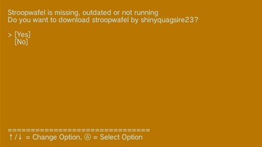
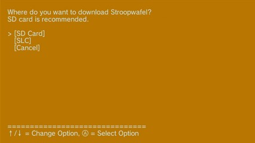

Descargar Stroopwafel
Condición: Se muestra cuando Stroopwafel no se está ejecutando en el sistema o es demasiado antiguo para usar la interfaz de comunicación entre procesos (IPC Interface).
Pantalla:

Stroopwafel is missing, outdated or not running Do you want to download stroopwafel by shinyquagsire23? [Yes] [No]
Utilizaremos Stroopwafel para cargar Aroma, así que selecciona [Yes]. Este paso también es necesario para poder usar *archivos homebrew* desde una tarjeta SD emulada en un dispositivo USB.

Where do you want to download Stroopwafel? SD card is recommended. [SD Card] [SLC] [Cancel]
Si usas una tarjeta SD real, se recomienda descargar Stroopwafel en la tarjeta SD, opción [SD Card]. De este modo, todos los *archivos homebrew* se encuentran en la tarjeta SD, lo que facilita la resolución de problemas.
Si usas una tarjeta SD emulada en un dispositivo USB, debes descargar Stroopwafel en la memoria SLC de la Wii U, opción [SLC], ya que no es posible cargar Stroopwafel desde una tarjeta SD emulada.
Stroopwafel consta de dos elementos: *minute* e *IOS plugins*. Dependiendo de la opción que elijas estos elementos se almacenaran en determinadas carpetas en la tarjeta SD o en la memoria SLC de la Wii U.
| Opción | minute | IOS plugins |
|---|---|---|
| [SD Card] | sd:/fw.img | sd:/wiiu/ios_plugins/*.ipx |
| [SLC] | /storage_slc/hax/fw.img | /storage_slc/hax/ios_plugins/*.ipx |
Al descargar Stroopwafel en la tarjeta SD, también se creará un archivo de configuración en la propia tarjeta SD (sd:/minute/minute.ini).